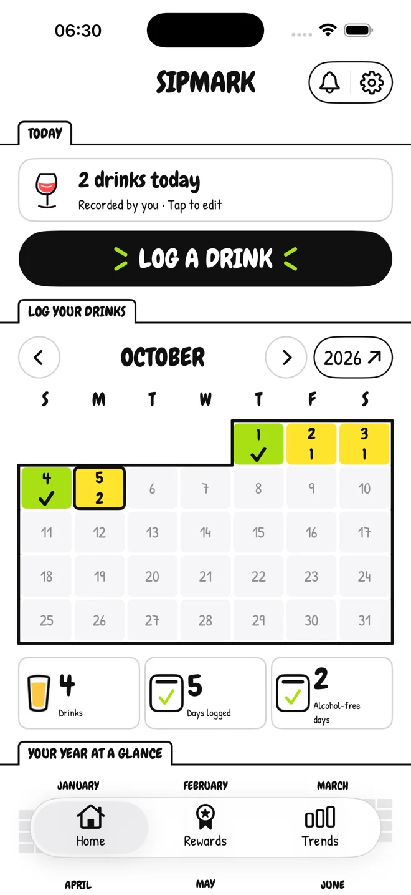
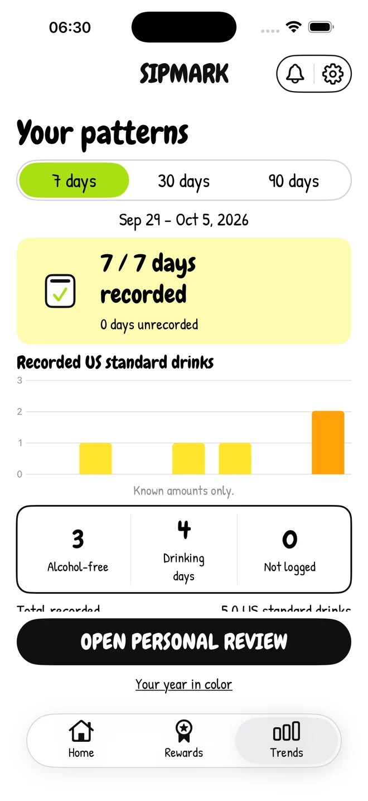

01
Make a small note.
Log what you drank, confirm an alcohol-free day, or add a note. Your journal starts with what you actually record.
THE MINDFUL DRINKING JOURNAL
Get to know your drinking habits. Record your drinks, reflect on your days, and find a pace that feels right for you.
A personal journal.
No account needed.

Actual app interface · Example journal data
A LITTLE CLARITY GOES A LONG WAY
You don’t need a perfect streak to learn something about yourself. Start with an honest record of the days you choose to log.
Log what you drank, confirm an alcohol-free day, or add a note. Your journal starts with what you actually record.
Capture how you slept, your energy, and your mood. Give yesterday a little context from the next morning.
Look back at your calendar and weekly review. Notice patterns, adjust your goals, and make your next choice with more awareness.

Actual app interface · Example journal data
THOUGHTFULLY MADE FOR EVERYDAY LIFE
A calendar and weekly review help you look back at drinking days, confirmed alcohol-free days, and the days you haven’t recorded. Unknown days stay unknown.
Explore longer periods with Pro. Your journal tells a story, not a diagnosis.
THE DETAILS MAKE IT PERSONAL
Choose Drink less or Take a break. Set personal goals and revisit them when your needs change.
Optional local reminders help you make time for your journal, on a schedule you choose.
Connect alcohol and sleep information with your permission. Manage access whenever you like.
Export a CSV copy or delete local records in Settings. Both remain available without Pro.
PERSONAL MEANS PERSONAL
Drink entries, notes, and check-ins stay on your iPhone. SIPMARK doesn’t require an account or operate its own journal cloud sync.
Read our privacy policyYour personal records are stored on your device. iOS backups follow your device settings.
Health access and reminders are optional. Exports go only to the destination you choose.
Apple and RevenueCat process purchase information to manage Pro. Your journal and Health readings aren’t sent to RevenueCat.
A FEW THINGS TO KNOW
A little more about the app, your data, and getting started.
SIPMARK is an iPhone journal for adults 18 and older who want to be more mindful of their drinking habits. Record drinks and alcohol-free days, add next-morning check-ins, and look back at patterns. It supports personal reflection, without a public feed or community account.
Active Pro access is required to create or edit records, confirm alcohol-free days, save check-ins, and use features marked Pro. You can browse saved entries, view the seven-day review, export your journal, and delete local data without Pro. Available products, prices, billing periods, and any eligible offers are shown in the app before purchase.
No. Apple Health is optional. If you connect it, SIPMARK can read alcohol-consumption and sleep data and write recorded alcohol amounts and times, subject to the permissions you grant. Notes, moods, and goals are not written to Health. You can manage permissions in Apple Health. Deleting the local journal doesn’t delete Health records.
Yes. In Settings, export your journal as a CSV file or delete your local journal. Export is a copy for your records, rather than an in-app transfer or import feature. Protect files you share or store elsewhere. App data deletion does not cancel an Apple subscription; manage subscriptions separately through your Apple Account.
SIPMARK is for journaling and personal awareness. It does not provide medical advice, diagnosis, treatment, or emergency monitoring. Estimates and goals are not safe-drinking limits. For advice about alcohol use or withdrawal, speak with a qualified healthcare professional.
Email matt1232026@gmail.com for app availability, support, purchase-access questions, or feedback. SIPMARK is designed for iPhone with iOS 17 or later. For an App Store purchase refund, use Apple’s Report a Problem service.
WE’RE HERE TO HELP
App questions, feedback, or privacy requests?
Get in touch with matt, the operator of SIPMARK.